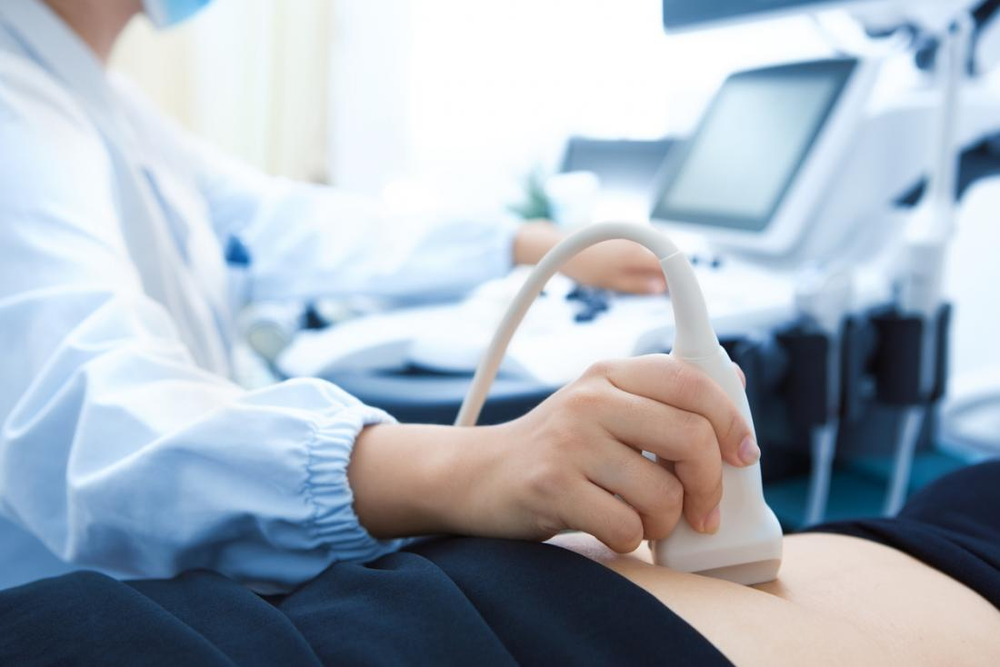
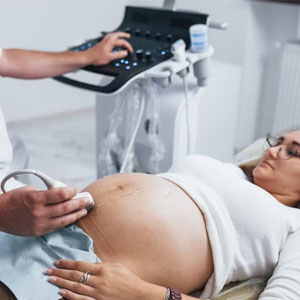
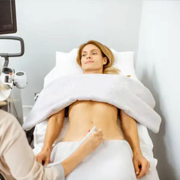
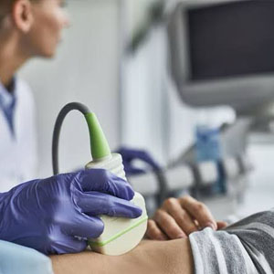
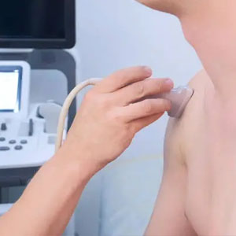
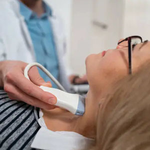
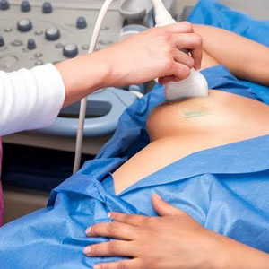
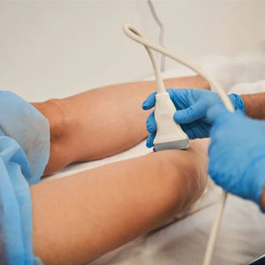

Estudios de ultrasonido para control de embarazo, diagnóstico musculoesquelético, tiroides, mama, abdomen y más. Sin esperas. Sin trámites. Solo su médico y usted.

Diagnostica Plus es el consultorio de la Dra. Lluvia Quiroz, médica especialista en Radiología e Imagen. Ella misma realiza cada estudio, interpreta cada imagen y entrega cada resultado.
Esto significa que usted habla directamente con quien lo atiende. Sin intermediarios, sin técnicos que no pueden darle respuestas, sin esperar días por un reporte.
Todos los estudios incluyen interpretación por la Dra. Quiroz, reporte impreso y explicación detallada de resultados.

Control de embarazo completo: evaluación del desarrollo fetal, mediciones, posición y bienestar del bebé en cada etapa.

Evaluación de útero, ovarios y órganos pélvicos. Detección de miomas, quistes ováricos y otras condiciones ginecológicas.

Revisión de hígado, vesícula, páncreas, riñones y bazo. Ideal para dolor abdominal, cálculos o seguimiento de condiciones crónicas.

Diagnóstico de lesiones en músculos, tendones y articulaciones. Para deportistas, trabajadores con dolor crónico o lesiones recientes.

Detección de nódulos, quistes, bocio y alteraciones de la glándula tiroides. Seguimiento de tratamientos endocrinológicos.

Evaluación de nódulos, quistes y fibroadenomas mamarios. Complemento importante a la mastografía, especialmente en mujeres jóvenes.

Evaluación del flujo sanguíneo para detectar trombosis, várices, insuficiencia venosa y otros problemas circulatorios.
La Dra. Lluvia me explicó cada detalle del ultrasonido. Me sentí muy cómoda durante todo mi control prenatal. Es una persona paciente y profesional.
Me explicó exactamente qué tenía en el tendón y qué tratamiento seguir. El diagnóstico fue rapidísimo y pude empezar mi rehabilitación de inmediato.
La Dra. Quiroz es muy profesional y las instalaciones están impecables. Me dio mucha confianza y me explicó todo con calma. La recomiendo totalmente.
Estamos dentro del Centro Médico Evanco Multimed Center, en el centro de Tecate.